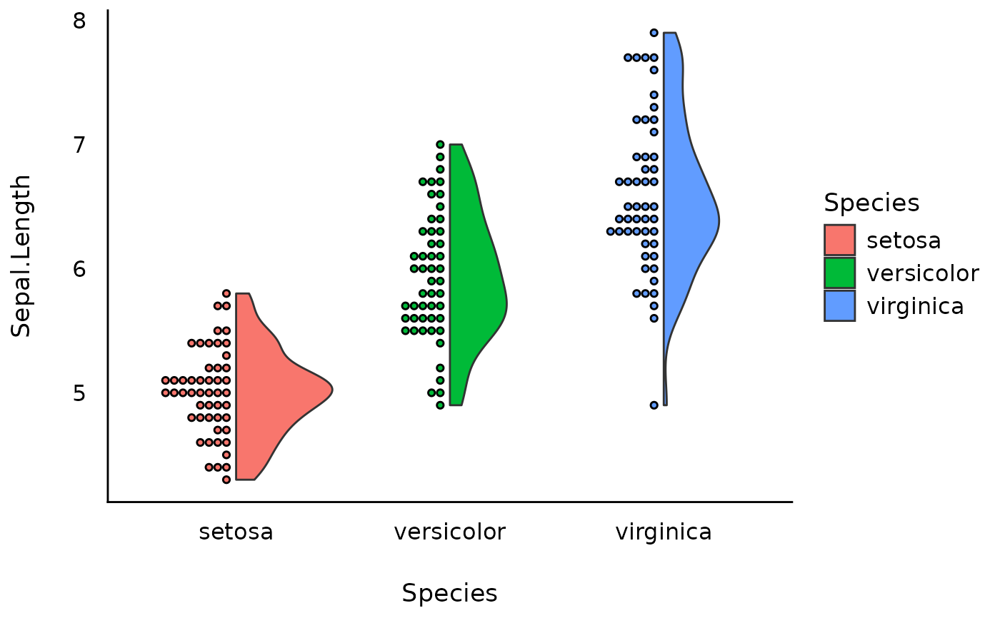
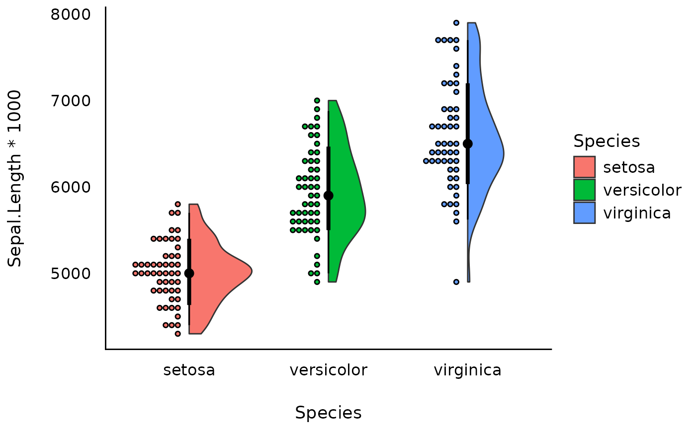

Create a half-violin half-dot plot, useful for visualising the distribution
and the sample size at the same time. The half violins are drawn with
ggdist::stat_slab() and the dots with ggdist::geom_dots(), so this
function needs the ggdist package (version 3.3.3 or later). When groups
are dodged, as with fill mapped to a second variable, each half violin
takes the right half of its dodge cell (the upper half in a horizontal plot,
see geom_violinhalf()), and, with the default position_dots, its dots go
in the other half. The dots stay in that half when the half violin is
flipped, so they overlap it.
Usage
geom_violindot(
mapping = NULL,
data = NULL,
trim = TRUE,
scale = c("area", "count", "width"),
show.legend = NA,
inherit.aes = TRUE,
dots_size = 0.7,
dots_color = NULL,
dots_fill = NULL,
binwidth = NA,
position_dots = ggplot2::position_nudge(x = -0.025, y = 0),
interval = FALSE,
...,
size_dots = dots_size,
color_dots = dots_color,
fill_dots = dots_fill
)Arguments
- mapping
Set of aesthetic mappings created by
aes(). If specified andinherit.aes = TRUE(the default), it is combined with the default mapping at the top level of the plot. You must supplymappingif there is no plot mapping.- data
The data to be displayed in this layer. There are three options:
If
NULL, the default, the data is inherited from the plot data as specified in the call toggplot().A
data.frame, or other object, will override the plot data. All objects will be fortified to produce a data frame. Seefortify()for which variables will be created.A
functionwill be called with a single argument, the plot data. The return value must be adata.frame, and will be used as the layer data. Afunctioncan be created from aformula(e.g.~ head(.x, 10)).- trim
If
TRUE(default), trim the tails of the half violins to the range of the data. IfFALSE, extend the tails asggplot2::geom_violin()does.- scale
If
"area"(default), all half violins have the same area (before trimming the tails). If"count", areas are scaled proportionally to the number of observations. If"width", all half violins have the same maximum width.- show.legend
logical. Should this layer be included in the legends?
NA, the default, includes if any aesthetics are mapped.FALSEnever includes, andTRUEalways includes. It can also be a named logical vector to finely select the aesthetics to display. To include legend keys for all levels, even when no data exists, useTRUE. IfNA, all levels are shown in legend, but unobserved levels are omitted.- inherit.aes
If
FALSE, overrides the default aesthetics, rather than combining with them. This is most useful for helper functions that define both data and aesthetics and shouldn't inherit behaviour from the default plot specification, e.g.annotation_borders().- binwidth
The bin width of the dots. The default,
NA, letsggdist::geom_dots()choose a bin width that fits the dots into the space beside each half violin. A number sets a fixed bin width, in the units of the value axis. Dodged groups leave the dots less room, so a fixed bin width can make them overflow it, with a warning from ggdist.- position_dots
Position adjustment for dots, either as a string, or the result of a call to a position adjustment function. The default nudges the dots by
x = -0.025(-0.06withinterval = TRUE). In a vertical plot, this moves them toward smaller x, away from the half violin, and in a dodged cell the nudge is at most half the room beside the half violin. In a horizontal plot, it moves them along the value axis. The default also dodges the dots with their half violins. A position that you set is used as given, so the dots are not dodged unless that position dodges them.- interval
Logical. If
TRUE, add the median and the 66% and 95% quantile intervals of each group, drawn withggdist::stat_slabinterval()without the slab, as inggdist::stat_pointinterval(). Default isFALSE.- ...
Other arguments passed to
geom_violinhalf()and toggdist::geom_dots(). The arguments of the density, the layout, and the interval (flip,stat,bw,kernel,bounds,drop,adjust,n,density,side,normalize,justification,fill_type,limits,p_limits,expand,breaks,outline_bars,slab_type,.width,point_interval,show_point,show_interval,fatten_point,arrow, and thepoint_andinterval_aesthetics) go to the half violins only.colourdoes not reach the dots whencolor_dotsis set, andfilldoes not reach them whenfill_dotsis set. As for the half violins, awidth(orheight) is the width of a whole violin, so the dots take half of it. An argument namedpositionmatchesposition_dots. The dots of groups with fewer than two observations are still drawn.- size_dots, dots_size
Size adjustment for dots, passed to the
dotsizeargument ofggdist::geom_dots().- color_dots, dots_color
Color adjustment for dots.
- fill_dots, dots_fill
Fill adjustment for dots.
Examples
library(ggplot2)
library(see)
ggplot(iris, aes(x = Species, y = Sepal.Length, fill = Species)) +
geom_violindot() +
theme_modern()

# The dots adapt to the scale of the data
ggplot(iris, aes(x = Species, y = Sepal.Length * 1000, fill = Species)) +
geom_violindot(interval = TRUE) +
theme_modern()
